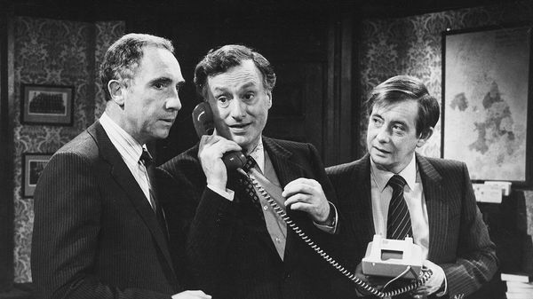

Jul 09, 2026 05:22 AM

It was not hard to guess how China’s state-run media would react to the resignation of Sir Keir Starmer last month and the ongoing process of replacing him. The fall of the sixth British prime minister in a decade is yet more evidence, they suggested, that liberal democracies are unstable. “Could there be a problem with this type of government?” coyly asked the People’s Daily in an interview with Cui Hongjian, a Chinese diplomat-turned-professor.
The chaotic turn in British politics since Brexit has been a gift to critics of Western democracies. It makes China’s system look more stable. “Foreigners doing politics are like children playing with mud,” said a commenter on a video of one ugly House of Commons debate circulating on social media. The problem is that British parties only care about winning elections, rather than improving things, said Mr Cui. So they “quickly swap through prime ministers to win back votes rather than address deep-seated problems”. The Communist Party, of course, does not have to worry about winning elections.
Interest in Britain’s politics extends to satire. “Yes Minister”, a bbc sitcom from the 1980s, has an unlikely but devoted online following, in part thanks to its cynical view of politics. Cheng Hong, wife of the late Li Keqiang, a former prime minister, translated a bbc book on the series into Chinese. One video analysing “Yes Minister” on Bilibili, a video platform, has 9m views.
Quotes are shared online. In one popular clip, Bernard, a naive civil servant, pushes for more transparency. “Surely the citizens of a democracy have a right to know!” he exclaims. “No,” responds Sir Humphrey, his boss. “They have a right to be ignorant.”
“Yes Minister” is also loved because some Chinese viewers recognise their own elitist, unaccountable bureaucracy. And the turnover of British leaders contrasts with the unending rule of Xi Jinping. In power since 2012, he removed presidential term limits in 2018. Commenting on Sir Keir’s resignation, one social-media user wrote, “I envy this kind of replacement.” “Wow,” replied another. “You dared to say it.” ■
Subscribers can sign up to Drum Tower, our new weekly newsletter, to understand what the world makes of China—and what China makes of the world.